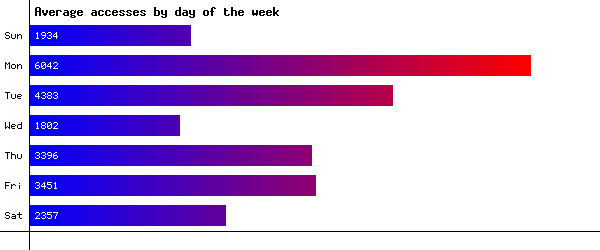
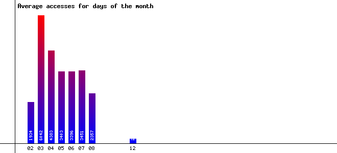
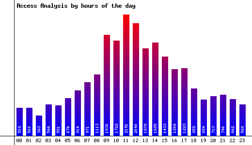
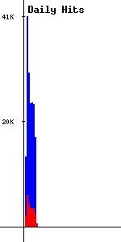

Graphical Charts
Days of the Week:

Days of the Month:

Hours of the Day:

Daily Trends:
The blue lines represent the total hits for each day, including images and all other files. The red lines represent just the hits on HTML pages.

Output generated by
MKStats
version 2.2